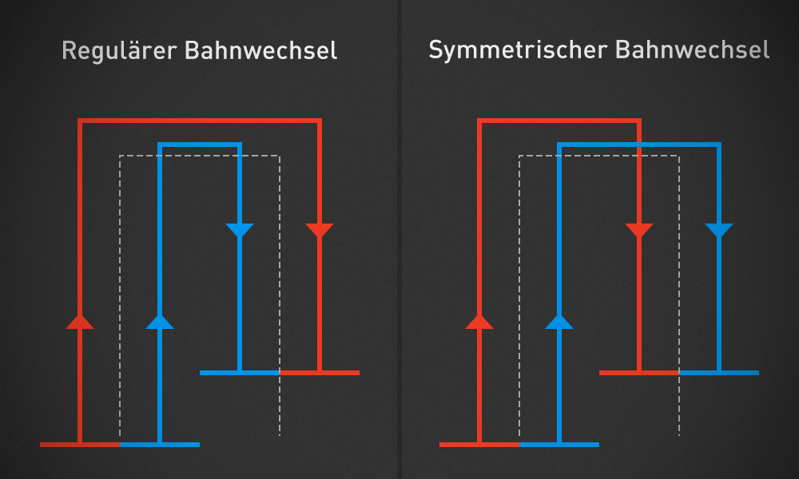

Bugs und Vorschläge werden auf unserer Issues-Seite behandelt.
Update immer auf den neuesten Build und überprüfe ob das Problem damit wirklich auftritt bevor du den Fehler meldest.
Überprüfe ob das Problem von jemandem anderen berichtet wurde. Ist das der Fall, antworte in der bestehenden Issue anstatt eine neue zu erstellen.
Schreib auf Englisch. Wir haben Benutzer (und Entwickler) aus der ganzen Welt. Durch die gemeinsame Kommunikation auf Englisch können Probleme einfacher verstanden und gelöst werden.
Schreibe klar und beschreibend: benutze einen eindeutigen Titel, ohne einen ganzen Roman zu schreiben. Beschreibe die Situation im Textfeld so genau wie möglich. Nenne die benutzte Map und die benutzten Fahrzeuge und Mods.
Lade die Log hoch:
Gehe zu Gist oder Pastebin, und füge dort die Log ein - per copy-and-paste oder durch drag-and-drop in das Textfeld (nur bei Gist).
Poste den Link zur Log in der Issue.
Nenne uns die benutzte Courseplay-Version. Du findest sie in der Log (### Courseplay: initialized 37/37 files (v4.00.0158)), oder im Spiel in der rechten unteren Ecke der Courseplay-Hud.
Welche Tools werden von Courseplay unterstützt?
Courseplay unterstützt alle Standard-Fahrzeuge und -Geräte, mit Ausnahme des Wassertrailers. Wir unterstützen auch alle Mods die die Standardscripte benutzen.
Hinweis: Courseplay fällt nicht automatisch Bäume oder händelt die Stämme.
Zusätzlich unterstützen wir spezifisch folgende Mods (ab v4.00):
AutoCombine von biedens
DriveControl von upsidedown
Overloader specialization für Überladewagen von Satis
Wie funktioniert der Versatz? — a.k.a. wie lasse ich mehrere Fahrzeuge im Verbund fahren?
Der seitliche Versatz kann in zwei verschiedenen Situationen benutzt werden:
Das Arbeitsgerät ist asymmetrisch, so dass man leicht seitlich versetzt (links oder rechts) zum Kurs fahren muss. Das ist z.B. beim Ballenladen oder einem Seitenmäher der Fall.
Man möchte mehrere Fahrzeuge nebeneinander einen Feldarbeitskurs abfahren lassen (um das Feld schneller zu bearbeiten).
Das asymmetrische Gerät (Gerät-Versatz)
Berechne (oder schätze zumindest) den horizontalen Abstand zwischen dem Punkt des Arbeitsgerätes, der in der Kursmitte sein sollte, und der Mitte des Fahrzeuges. Diese Distanz wird der horizontale Versatz sein. Die Standard-Ballenlader (Arcusin), zum Beispiel, benötigt einen Versatz von etwa 2,5 Meter nach links (da der Greifer auf der rechten Seite des Gerätes ist). Der Standard-Ursus-Ballenlader benötigt einen Versatz von etwa 2,4 Meter nach links.
Der Verbund (Bahnversatz)
Um mehrere Fahrzeuge im Verbund fahren zu lassen muss folgendes beachtet werden:
Alle Fahrzeuge benutzen das gleiche Gerät, mit der gleichen Arbeitsbreite.
Starte nicht alle Fahrzeuge zugleich, sondern zeitlich versetzt; ansonsten werden sie sich früher oder später ineinander verkeilen.
Wenn die Arbeitsbreite des Gerätes keine Ganzzahl ist (6, 8, 12 usw.), sondern im Kommabereich liegt (z.B. 7,5, 3,4), sollte auf die nächste ganze Zahl abgerundet werden um den Versatz zu berechnen. Dies liegt an unserer Limitierung, dass der Versatz nur in 0,5er-Schritten eingestellt werden kann.
Jedes Fahrzeug muss den selben generierten Kurs benutzen. Die Kursarbeitsbreite ist die Anzahl der Fahrzeuge multipliziert mit der Gerätearbeitsbreite. Werden zum Beispiel zwei 6m-Säer benutzt, muss die Kursarbeitsbreite 12m sein – nochmal: jedes Fahrzeug muss diesen 12m-(Gesamtarbeitsbreite)-Kurs benutzen.
Um beim Säerbeispiel zu bleiben wird Fahrzeug #1 auf der linken Seite des Kurses fahren, mit einem Versatz von -3 Meter; Fahrzeug #2 wird auf der rechten Seite des Kurses mit einem Versatz von 3 Meter fahren.
Regulärer vs. symmetrischer Bahnwechsel
Es gibt zwei Methoden, die Bahnen der Geräte festzulegen: den regulären Bahnwechsel und den symmetrischen Bahnwechsel.
Regulärer Bahnwechsel: während sie in der ersten Bahn nebeneinander fahren werden, sollte nicht vergessen werden ihre jeweilige Position, relativ zum Kurs, immer links bzw. rechts ist. In der nächsten Bahn scheinen sie also ihre Positionen zu wechseln, doch in Wirklichkeit bleiben sie links bzw. rechts vom Kurs.
Symmetrischer Bahnwechsel: die Fahrzeuge werden effektiv eine Bahn für das nachfolgende Fahrzeug auslassen.

Regulärer vs. symmetrischer BahnwechselRegulärer BahnwechselSymmetrischer Bahnwechsel
Bahnversatz-Berechnung
Die Formel zur Berechnung des Versatzes lautet:
Anzahl ist die Anzahl der Fahrzeuge im Verbund Nummer ist die Nummer des Fahrzeugs im Verbund (#1, #2, #3, …) Arbeitsbreite ist die Geräte-Arbeitsbreite eines einzelnen Gerätes (nicht die Gesamtarbeitsbreite)
The Versatz für das jew. Gerät ist:
( Nummer - ( (Anzahl + 1) / 2 ) ) * Arbeitsbreite
Wir haben zusätzlich noch ein Tool zur Berechnung des Versatzes für mehrere Geräte gebaut: